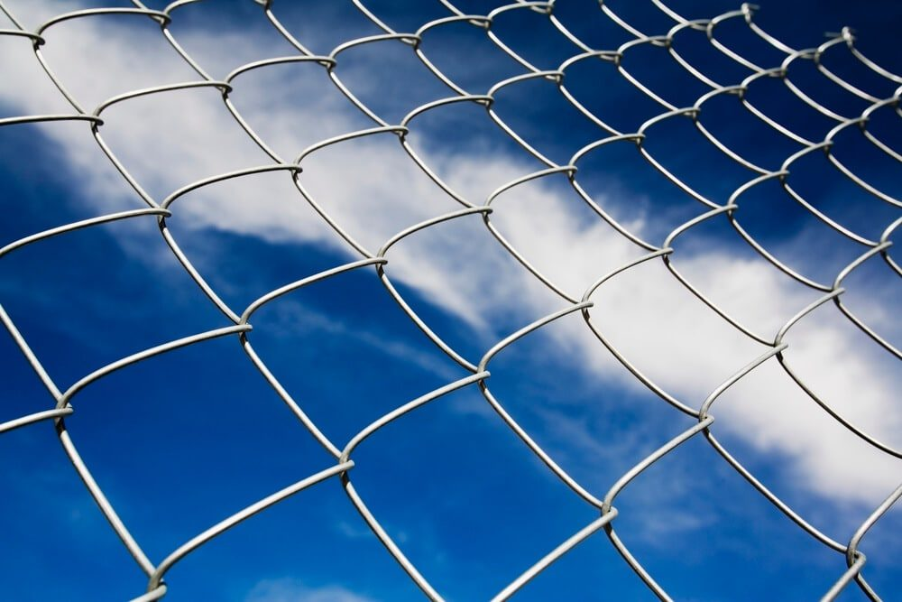

In This Guide
- Strength depends on the material, the height, and above all how well the posts, footings, and gates are built.
- Steel and wrought iron give the most raw strength, while a well-built wood fence offers a strong mix of privacy, sturdiness, and easy repairs.
- Solid privacy panels catch wind like a sail, so post depth and footings matter most in hurricane country.
- Vinyl and chain link with privacy slats cover the needs for lower upkeep or a tighter budget.
Ask ten people for the strongest privacy fence and you will get ten different answers, because "strong" can mean several things. A fence can shrug off a hard hit, ride out a hurricane gust, last decades in humid air, or slow down someone who wants over it. Privacy adds a second demand: a fence that hides your yard has to be solid, and solid fences have weak points of their own.
This guide from Big Easy Fence breaks down how the common materials compare, what really decides strength once a fence is in the ground, and how to pick the right one for a Louisiana yard.
What "Strongest" Really Means
Four things tend to matter. Impact resistance is how well the fence handles a kicked ball, a falling limb, or a bumped mower. Wind resistance is how it stands up to storms. Lifespan is how long it lasts in heat, rain, and humidity. Security is how hard it is to climb, cut, or push through. No single material wins all four, so the honest answer to "which fence is strongest" is "strongest at what?"
Privacy also changes the math. Most people want a fence around 6 feet tall with no gaps between boards or panels. That tall, solid face is what makes the yard feel private, and it is also what makes the fence work harder in a storm.
Privacy Fence Materials Compared
Wood

A wood privacy fence is the go-to for a reason. It goes up with tightly fitted boards, it can be stained or painted to match the house, and a single damaged board can be swapped out without rebuilding the run. Wood holds up well when the posts are pressure treated and the boards are sealed.
The weak spots are moisture and pests. Wood that stays wet rots, and Louisiana gives it plenty of chances to stay wet. Sealing or staining on a regular schedule is the price of a long life.
Vinyl
Vinyl privacy panels are solid, never need paint, and do not rot. They are a fair choice if you want a clean look and little upkeep. Vinyl can crack under a hard impact, and long solid runs take a lot of wind pressure, so ask what reinforcement the system uses in its posts and rails. Not every vinyl product is built the same.
Steel, Aluminum, and Wrought Iron

For raw material strength, metal fences lead the pack. Steel and wrought iron take impact and resist cutting far better than wood or vinyl. Aluminum is lighter and does not rust, though it gives up some of that toughness.
The catch is privacy. Metal fences are usually open, so you need privacy panels, slats, or a row of tall shrubs behind them. Metal also needs its coating kept up, because rust starts wherever paint chips.
Chain Link With Privacy Slats

Chain link is a tough, budget-friendly fence that can be customized in height and finish. On its own it gives almost no privacy, but privacy slats woven through the mesh can close most of the gaps. It suits back yards, side yards, and commercial spaces where function matters more than looks.
| Material | Strength | Privacy | Upkeep |
|---|---|---|---|
| Wood | Strong with treated posts, easy to repair | Full when built solid | Regular sealing or staining |
| Vinyl | Good, but can crack on a hard hit | Full with solid panels | Low, mostly washing |
| Aluminum | Moderate, lightweight | Needs added panels or plants | Low, does not rust |
| Steel and Wrought Iron | Highest of the group | Needs added panels or plants | Coating must stay intact |
| Chain Link With Slats | Tough and flexible | Partial | Low, check coating |
Why Installation Decides Real-World Strength
Two fences made from the same material can perform very differently. The build matters as much as the material, and these are the places where strength is won or lost.
Posts and Footings
Posts carry the whole fence. Deep, well-anchored posts set in concrete keep a fence upright when the ground is soft and wet. Shallow or loosely set posts lean first, no matter how good the panels are.
Wind Load
A solid 6-foot privacy fence works a bit like a sail. In hurricane season, that pressure lands on the posts and the connections. Sturdy posts, tight fasteners, and a design that suits your yard help the fence survive a strong gust.
Height
Taller fences give more privacy but also catch more wind and cost more to build. Local rules may also limit height, especially in front yards, so check with your city or parish and any homeowners association before you settle on a number.
Gates and Hardware
Gates are the weakest link in most fences. A heavy gate pulls on its post every time it swings, so it needs a stout post and good hinges. Coated or stainless fasteners hold up better than plain nails in humid air.
Every material loses strength when it is ignored. Sealing wood, touching up metal coatings, and checking posts after storms keeps a strong fence strong.
Which Fence Should You Pick?
There is no single winner, but there are clear matches. If you want the most material strength and can add privacy panels or plantings, steel or wrought iron is the top pick. If you want privacy, strength, and easy repairs in one package, a well-built wood fence is hard to beat. If you want low upkeep, vinyl fits, provided the system is properly reinforced. If budget rules, chain link with slats does the job.
You can compare more options on our fence types page, or read how different fence materials hold up over time before you decide.
Getting the Build Right
Installing a privacy fence takes real carpentry, and small mistakes in post depth or spacing show up later as leaning sections. Set your budget for materials, labor, and the extras that come with gates, then plan for the upkeep your chosen material needs. A local installer who knows Louisiana soil and storms can look at your yard and recommend a fence that fits it. Ask about a free estimate and a design built for both privacy and strength.
Want a Privacy Fence Built to Last?
Tell us about your yard and how much privacy you want, and we will suggest a material and a design that fit.